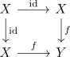
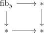

classification of epimorphism in anima
Proposition
Let $f: X \rightarrow Y$ be a map between anima TFAE:
- $f$ is an epimorphism
- $f$ is an acyclic map, i.e. a (co-)homology isomorphism
Proof
First recall that a mrophism $f: X \rightarrow Y$ is an epimorphism, if and only if for each $Z$, the map $f^*: \mathrm{Hom}_{\mathrm{An}}(Y,Z) \rightarrow \mathrm{Hom}_{\mathrm{An}}(X,Z)$ is a monomorphism in anima.
1) $\implies$ 2)
Now monomorphisms are precisely the inclusions of path components, hence isomorphisms on $\pi_1(-)$ and above as well as a monomorphism on $\pi_0$.
Now by representability of singular cohomology, we get that $H_*(-, \mathbb{Z})$ is an isomorphism for $* \geq 1$. Now it remains to show that it is an isomorphism on $H_0(-, \mathbb{Z})$, but there it suffices to use the suspension isomorphism and show that $\Sigma X \rightarrow \Sigma Y$ is an epimorphism.
This follows as the forgetful functor $\mathrm{An}_* \rightarrow \mathrm{An}$ preserves and detects pushouts, i.e. we can lift $f: X \rightarrow Y$ to a pointed map which then remains an epimorphism. Then the suspension functor is colimit preserving functor $-\wedge S^1: \mathrm{An}_{*} \rightarrow \mathrm{An}_*$, which therefore also preserves epimorphisms, i.e. $\Sigma f$ is an epimorphsim in $\mathrm{An}_*$ and $\mathrm{An}$.
2) $\implies$ 1)
Let $f$ be an acyclic map, then we need to show that

is a pushout diagram in the category of Anima or in the category $\mathrm{An}_{/Y}$, since the forgetful functor $\mathrm{An} \rightarrow \mathrm{An}_{/Y}$.
Now $\mathrm{An}$ satisfies descent, so we have $\mathrm{An}_{/Y} \simeq \mathrm{An}_{/ \mathrm{colim}_Y *} \simeq \lim_{Y} \mathrm{An}_{/*}$. Here each transition functor is colimit preserving (colimits in anima are universal), hence epimorphism preserving and it suffices to show that $\mathrm{fib}_y \rightarrow *$ is an epimorphism for each $y \in y$. In other words, we need to show that

is a pushout or in other words, that $\Sigma \mathrm{fib}_y$ is contractible. But $\Sigma \mathrm{fib}_y$ is the suspension of an acyclic anima, hence contractible (cf. suspension of an acyclic space is contractible).